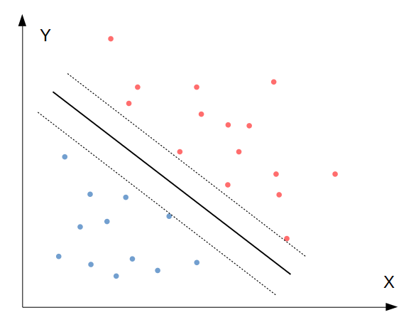
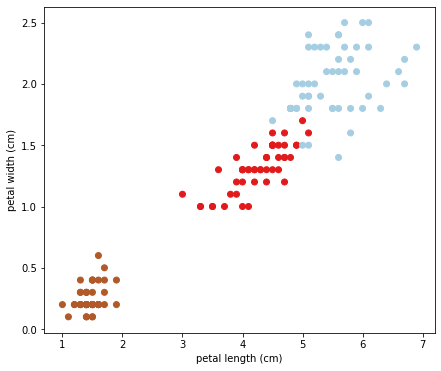
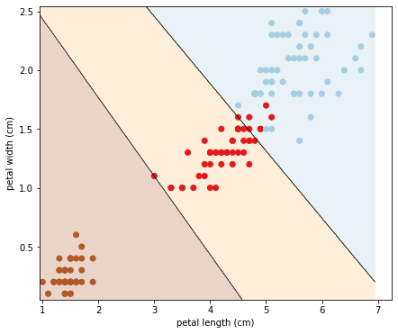
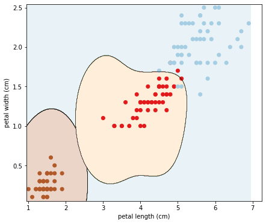

โดย ชิตพงษ์ กิตตินราดร | มกราคม 2563
คราวนี้ก็ถึงเวลาที่จะแนะนำ Algorithm ใหม่ ที่ชื่อ Support Vector Machines หรือ SVM ซึ่งทั้งยึดหยุ่นและทำงานได้ดี โดยเฉพาะอย่างยิ่งเมื่อข้อมูลมีความซับซ้อน (หลาย Feature) แต่จำนวนตัวอย่างไม่มาก (ต่ำกว่าแสนรายการ)
SVM น่าจะอธิบายได้ง่ายที่สุดด้วยภาพ:

จากภาพเป็นปัญหา Binary classification เราต้องการจำแนกข้อมูลออกเป็นสองพวก คือสีน้ำเงินและสีแดง สิ่งที่ SVM ทำ คือการหาเส้นแบ่งการตัดสินใจที่เป็นเส้นทึบ ซึ่งเส้นนี้จะเกิดขึ้นระหว่างกลางของเส้นประด้านซ้ายและขวา โดยมีเงื่อนไขว่าจะต้องหาคู่ของเส้นประที่กว้างที่สุดเท่าที่จะเป็นไปได้
โดยคู่ของเส้นประที่กว้างที่สุดเท่าที่จะเป็นไปได้นี้ จะมีสองแบบ คือ 1) Hard margin classification คือคู่เส้นประที่ห้ามไม่ให้มีจุดข้อมูลอยู่ในพื้นที่ระหว่างเส้นประ และ 2) Soft margin classification คืออนุญาตให้มีข้อมูลอยู่ในพื้นที่ระหว่างเส้นประได้บ้าง
โดยใน scikit-learn เราสามารถกำหนด Hyperparameter C เพื่อเลือกระดับของการอนุญาตให้มีการละเมิดขอบเขตเส้นประ โดยถ้า C มาค่าน้อย หมายความว่ายอมให้มีขอบเขตที่กว้างขึ้น นั่นแปลว่ามี Regularisation มากขึ้นนั่นเอง
SVM นั้นถึงแม้จะถูกออกแบบมาสำหรับ Binary classification แต่สามารถนำไปประยุกต์ใช้กับ Multiclass classification และ Linear regression ได้โดยง่าย โดยใช้หลักการเดิมแต่เปลี่ยนรายละเอียดเล็กน้อย ซึ่งจะไม่กล่าวถึงในที่นี้ ขอให้รู้ว่าในระดับการใช้งาน สามารถใส่ข้อมูลแบบ Multiclass ลงไปได้เลย ส่วน SVM สำหรับ Linear regression ให้เรียกใช้ Class LinearSVR จากโมดูล sklearn.svm
ก่อนที่จะลองทำจริง เรามาทำความเข้าใจกันก่อนว่า SVM ทำงานจริงๆ อย่างไร
SVM ใช้ Hypothesis function แบบเส้นตรง เหมือนกับ Linear regression นั่นคือ:
โดยถ้าผลลัพธ์เป็นบวก จะทำนาย Class ว่าเป็น 1 ส่วนถ้าเป็นลบ ทำนายว่าเป็น 0 เราสามารถเขียนวิธีการตัดสินใจตามเงื่อนไขดังกล่าวได้ดังนี้:
เมื่อเรานิยามเส้นแบ่งการจัดสินใจแล้ว (เส้นทึบ) เรากำหนดเส้นประทั้งสองด้านของเส้นทึบ โดยเส้นประแต่ละด้านคือตำแหน่งที่ เท่ากับ -1 และ 1
ต่อมา ลองพิจารณาว่า ความชันของฟังก์ชันการตัดสินใจ เท่ากับ Norm ของ Vector ค่าน้ำหนัก w:
ดังนั้นถ้าเราหารความชันของฟังก์ชันการตัดสินใจด้วย 2 ก็แปลว่าเราต้องคูณ 2 เข้าไปในความกว้างเส้นประเพื่อให้สมการยังคงเป็นจริง ดังนั้นผลที่ได้คือการขยายความกว้างระหว่างเส้นทึบกับเส้นประออกด้านละ 2 เท่า
จากข้อเท็จจริงนี้ เราก็จะได้เป้าหมายว่าเราต้องการลด เพื่อให้ได้ขอบเขตเส้นแบ่งที่กว้างที่สุดเท่าที่จะเป็นไปได้ อย่างไรก็ตาม ในเวลาเดียวกันเราไม่ต้องการให้ขอบเขตเส้นแบ่งนั้นกว้างเกินไปจนกระทั่งครอบคลุมจุดข้อมูล ดังนั้นเราจึงต้องการให้ฟังก์ชันการตัดสินใจนั้นมีค่ามากกว่า 1 ในด้านที่ผลพยากรณ์เป็น 1 ("ใช่") และน้อยกว่า -1 ในด้านที่ผลพยากรณ์เป็น 0 ("ไม่ใช่") โดยถ้าเรากำหนดตัวแปร สำหรับด้าน และ สำหรับด้าน เราก็จะสามารถเขียนข้อจำกัดนี้ได้ว่า สำหรับทุก Class คำตอบ
ดังนั้นเราจะได้เป้าหมายการ Optimise ของ SVM algorithm ว่า:
สังเกตว่าเรา Minimise แทนที่จะเป็น เพราะ สามารถหาอนุพันธ์ได้ผลเป็น w ในขณะที่อนุพันธ์ของ เท่ากับ 0 ไม่สามารถนำไป Optimise ได้
เป้าหมายนี้ใช้สำหรับ Hard margin SVM แต่ถ้าเป็น Soft margin ที่เราต้องการอนุญาตให้พื้นที่เส้นขอบเขตการตัดสินใจนั้นกินบริเวณที่มีจุดข้อมูลอยู่ด้วยได้ ก็ต้องเพิ่มตัวแปรที่เรียกว่า Slack variable (อ่านว่า Zeta) โดยระดับของ Slack variable จะถูกกำหนดโดย Hyperparameter C
ดังนั้นเป้าหมายการ Optimise สำหรับ Soft margin SVM คือ:
SVM algorithm ที่เรานำเสนอไป มีข้อจำกัดคือสามารถสร้างเส้นแบ่งขอบเขตการตัดสินใจแบบเส้นตรงเท่านั้น ซึ่งอาจทำงานได้ไม่ดีถ้าความสัมพันธ์ของข้อมูลนั้นมีความซับซ้อนจนแบ่งด้วยเส้นตรงไม่ได้ วิธีการแก้ปัญหานี้เรียกว่า Kernel
Kernel คือ "ทริค" ทางคณิตศาสตร์ที่ทำให้ Algorithm สามารถ Optimise ค่าตัวแปรแบบ Polynomial ได้ โดยไม่ต้องไปเปลี่ยนรูปแบบและความสัมพันธ์ของ Feature ตั้งต้น แต่ก่อนอื่น เราจะต้องดัดแปลงเป้าหมายการ Optimise ของเราให้อยู่ในรูปแบบที่ Kernel จะทำงานได้ โดยเปลี่ยนจากรูปแบบในสมการที่ (5) ซึ่งเป็นปัญหาแบบ Primal problem ให้กลายเป็นปัญหาแบบ Dual problem (ปัญหาทั้งสองรูปแบบมีรายละเอียดทางคณิตศาสตร์ที่ละเอียดเกินขอบเขตที่จะอธิบายในที่นี้ ในขั้นนี้ขอเพียงให้รู้ว่า SVM algorithm สามารถใช้ทั้งสองวิธีในการ Optimise ได้ผลเหมือนกัน)
รูปแบบของเป้าหมาย Optimise แบบใหม่ที่จะใช้ คือ:
เมื่อหา Vector ที่ทำให้สมการนี้มีค่าน้อยที่สุดได้แล้ว (โดยใช้ Quadratic Programming Solver ซึ่งเป็น Algorithm สำเร็จรูปในการหาคำตอบปัญหาประเภทนี้โดยเฉพาะ) เราก็จะสามารถคำนวนหา Vector และ Intercept ที่ทำให้สมการ Primal problem (4) หรือ (5) นั้นมีค่าน้อยที่สุด โดยทำดังนี้:
เป็นอันว่าเราได้รูปแบบของเป้าหมาย Optimisation ที่พร้อมสำหรับ Kernel แล้ว ต่อไปคือการอธิบาย Kernel
สมมุติว่าเราต้องการทำเหมือนกับว่า Hypothesis function ที่ประกอบด้วยตัวแปร และ นั้นมีรูปร่างฟังก์ชันที่ซับซ้อนขึ้น โดยต้องการให้เป็น Second-degree polynomial เราจะสามารถเขียน Mapping function ( อ่านว่า Phi) ของสมการนี้ได้ดังนี้:
ทีนี้ลองดูว่า ถ้าเราคำนวน Dot product ของ Vector ขนาด 3 มิติ 2 Vector (แบบเดียวกับที่อยู่ในสมการ (6)) โดยสมมุติว่าชื่อ a และ b จะได้ว่า:
ก็หมายความว่า เราสามารถหา Dot product ของ Vector ที่อยู่ในรูปแบบ Mapping function (คือยังไม่ได้เปลี่ยนรูปจริงๆ) เพียงด้วยการนำเอา Dot product ของ Vector ต้นฉบับมายกกำลังสอง ซึ่งก็หมายความว่าในทางกลับกัน ถ้าเราคำนวนฟังก์ชันเป้าหมาย Optimisation ด้วยการแทนที่ ด้วย เราก็จะได้ผฃการคำนวนเสมือนว่าเราได้เปลี่ยนรูป Hypothesis function จาก Linear ให้เป็น Second-degree polynomial โดยไม่ต้องไปเปลี่ยนฟังก์ชันจริง
ดังนั้น เวลาเราใช้ Kernel ก็เพียงเปลี่ยน ในสมการที่ (6) ให้เป็น
เราเรียกฟังก์ชัน นี้ว่า Second-degree polynomial kernel ซึ่งเป็นหนึ่งใน Kernel หลายแบบที่ทำหน้าที่เดียวกัน ต่างตรงที่แต่ละ Kernel จะเปลี่ยนรูปสมการเป็นรูปแบบที่ไม่เหมือนกัน ทำให้เหมาะกับข้อมูลแต่ละประเภท โดย Kernel เป็นที่นิยม เช่น:
ทั้งหมดนี้คือหลักการของ SVM และ Kernel อนึ่งคณิตศาสตร์ในส่วนนี้ ส่วนมากอ้างอิงจากหนังสือ Hands-On Machine Learning with Scikit-Learn & TensorFlow โดย Aurélien Géron
ทีนี้ก็ถึงเวลามาลองโปรแกรมกันเลย
เราจะใช้ชุดข้อมูล Iris เหมือนเดิมในการทดลอง SVM โดยจะใช้ข้อมูล Petal length และ Petal width เท่านั้น เพื่อให้ที่สามารถพล็อตกราฟแสดงขอบเขตการตัดสินใจให้ดูได้
เริ่มด้วยการโหลดและพล็อตดูข้อมูล:
import numpy as np
import matplotlib.pyplot as plt
from sklearn import datasets
from sklearn.model_selection import train_test_split
from sklearn.pipeline import Pipeline
from sklearn.preprocessing import StandardScaler
from sklearn.svm import LinearSVC
from sklearn.svm import SVC
# Load the iris data
iris = datasets.load_iris()
X = iris.data[:, 2:]
y = iris.target
# Split the data into train and test set
X_train, X_test, y_train, y_test = train_test_split(X, y, random_state=42)
# Plot the data
plt.figure(figsize=(7,6))
plt.scatter(X[:, 0], X[:, 1], c=y, cmap='Paired_r')
plt.xlabel(iris.feature_names[2])
plt.ylabel(iris.feature_names[3])
plt.show()
ได้ Scatterplot ของความสัมพันธ์ระหว่าง Petal length และ Petal width โดยจำแนกจุดข้อมูลตาม Class ซึ่งได้แก่ ['setosa' 'versicolor' 'virginica']:

จากนั้นทดลองเทรนด้วย Linear SVC ซึ่งเป็นเวอร์ชั่นที่ใช้ Hypothesis function แบบเส้นตรง โดยเรียก Class LinearSVC จากโมดูล sklearn.svm:
# Model 1: Linear SVC version
# Create a pipeline
clf_linSVC = Pipeline([
("linear_svc", LinearSVC(C=200, loss="hinge", max_iter=100000))
])
# Train the model
clf_linSVC.fit(X_train, y_train)
# Evaluate the model's accuracy
print("Train set accuracy = " + str(clf_linSVC.score(X_train, y_train)))
print("Test set accuracy = " + str(clf_linSVC.score(X_test, y_test)))
ทดสอบแล้วได้ค่าความแม่นยำดีทีเดียว:
Train set accuracy = 0.9375
Test set accuracy = 0.9736842105263158
ทีนี้เราลองพล็อตพื้นที่และเส้นแบ่งการตัดสินใจของโมเดล โดยสร้างฟังก์ชันชื่อ plot_decision_boundary ดังนี้:
# Plot the decision boundaries
def plot_decision_boundary(clf, X, y, cmap='Paired_r'):
h = 0.005 # Boundary lines' resolution
x_min, x_max = X[:,0].min() - 10*h, X[:,0].max() + 10*h
y_min, y_max = X[:,1].min() - 10*h, X[:,1].max() + 10*h
xx, yy = np.meshgrid(np.arange(x_min, x_max, h),
np.arange(y_min, y_max, h))
Z = clf.predict(np.c_[xx.ravel(), yy.ravel()])
Z = Z.reshape(xx.shape)
plt.figure(figsize=(7,6))
plt.contourf(xx, yy, Z, cmap=cmap, alpha=0.25) # Background
plt.contour(xx, yy, Z, colors='k', linewidths=0.2) # Boundary lines
plt.scatter(X[:,0], X[:,1], c=y, cmap=cmap); # Data points
plt.xlabel(iris.feature_names[2])
plt.ylabel(iris.feature_names[3])
plot_decision_boundary(clf_linSVC, X, y)
ได้ผลออกมาตามภาพนี้:

จะสังเกตว่าการที่ขอบเขตการตัดสินใจเป็นเส้นตรง ทำให้ไม่สามารถฟิตขอบเขตระหว่าง Class สีแดงกับสีฟ้าได้ดี ส่งผลต่อความแม่นยำของโมเดล ดังนั้น เรามาลองใช้ Kernel เพื่อทำให้ขอบเขตการตัดสินใจนั้นมีความโค้งรับกับความสัมพันธ์ของข้อมูล
โดยเราจะใช้ Gaussian RBF kernel เรียกใช้จาก Class SVC ในโมดูล sklearn.svm โดยกำหนด Argument kernel="rbf":
# Model 2: Gaussian RBF Kernel version
# Create a pipeline
clf_SVC = Pipeline([
("linear_svc", SVC(kernel="rbf", gamma=2, C=10, max_iter=10000))
])
# Train the model
clf_SVC.fit(X_train, y_train)
# Evaluate the model's accuracy
print("Train set accuracy = " + str(clf_SVC.score(X_train, y_train)))
print("Test set accuracy = " + str(clf_SVC.score(X_test, y_test)))
สังเกตว่ามี Argument gamma ซึ่งก็คือ Hyperparameter ใน Kernel function โดย gamma นี้กำหนดความแคบของส่วนโค้งซึ่งมีรูปร่างตามการกระจายแบบ Gaussian
ผลความแม่นยำที่ได้ คือ 100%:
Train set accuracy = 0.9553571428571429
Test set accuracy = 1.0
ต่อมาลองพล็อตพื้นที่และเส้นแบ่งการตัดสินใจของโมเดลดู:
# Plot the decision boundaries
plot_decision_boundary(clf_SVC, X, y)
ภาพที่ได้คือ:

จะเห็นว่า Kernel นั้นแก้ปัญหาของเราได้จริง เพราะทำให้เส้นการตัดสินใจนั้นโค้งรับกับข้อมูล ส่งผลให้ความผิดพลาดลดลง
เป็นอันว่าเราได้รู้จัก Support Vector Machines รวมทั้ง Kernel ที่ช่วยให้ Algorithm สามารถเรียนรู้การตัดสินใจข้อมูลที่ซับซ้อนได้ ตอนต่อไปจะมาทำความรู้จักกับอีก Algorithm ที่ใช้งานได้ดีในหลายๆ กรณีเช่นกัน คือ Decision trees
หน้าแรก | บทที่ 7 Bias and Variance | บทที่ 9: Decision Trees